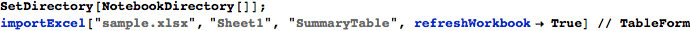
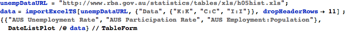
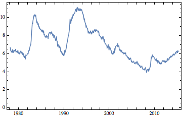
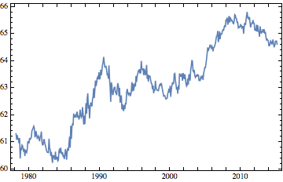
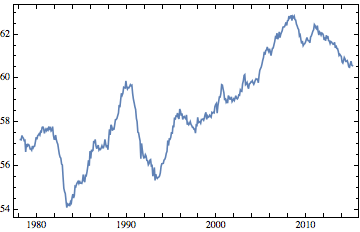

DataTricks
DataTricks is a simple Mathematica package for extracting data from Excel workbooks. It does not depend on ExcelLink, and improves upon the built-in Import command in several ways:
1. There are no limits to the size of the workbook that can be imported;
2. All workbook formats readable by Excel can be imported;
3. Workbooks can refresh their sources before the data are extracted; and
4. Excel ranges and Named ranges can be used to select data.
Installing & Using DataTricks
DataTricks only works on Windows, and needs Excel 2010 or later to work. It also needs the Office Primary Interop Assemblies installed; see this link for more information.
Download DataTricks.m to your harddisk from here. In Mathematica, choose Install... from the File menu. Select Package as the file type, select File as the source, and navigate to the downloaded file. Click OK.
In your notebook, import the DataTricks package using a Needs[ ... ] statement:

You can import excel data using the importExcel[ ... ] command, or importExcelTS[ ... ] for time series data. The syntax is as follows:
{data1, data2, ...} = importExcel[“data.xlsx”,{{”Sheet1”, “SummaryTable”}, {“Sheet2”, “A2:C8”}, ...}, refreshWorkbook→ True]
The syntax for importExcelTS is similar, but an additional option, dateColumn is available:
{ts1, ts2, ts3, ... } = importExcelTS[“data.xlsx”, {“Data”,{“K:K”,”C:C”,”I:I”}}, dropHeaderRows→ 11, dateColumn → “A”] ;
Example 1 : A Simple Table
The simplest way to import data is to call importExcel[...] with the file name, sheet name, and an Excel range reference. The range reference can be in R1C1 format (e.g. A1:B7) or a named range. The use of named ranges can help prevent hard-coded cell references, which can lead to errors when the dimensions of the source data change.

| GDP (QoQ) | 14Q4 | 0.6 |
| Service sector output (3Mo3M) | 3m to January | 0.8 |
| Industrial production (3Mo3M) | 3m to January | 0. |
| Manufacturing output (3Mo3M) | 3m to January | 0.4 |
| GfK Consumer Confidence | March | 4. |
| Retail sales volumes (YoY) | February | 5.7 |
| Fixed investment (QoQ) | 14Q4 | -0.6 |
| Goods exports (volumes) (MoM) | January | -3.1 |
| Goods imports (volumes) (MoM) | January | -4.8 |
| Current account balance, £bn | 14Q4 | -25.3 |
| Business Investment (QoQ) | 14Q4 | -0.9 |
Example 2 : Time Series Data
DataTricks includes some convenience methods for loading time series data, in the format expected by DateListPlot. Data are assumed to be set up in columns, with header rows. By default, dates are assumed to be in column A, although this can be overridden using the dateColumn option.

| AUS Unemployment Rate | AUS Participation Rate | AUS Employment:Population |
|  |  |  |